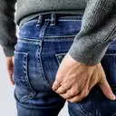

Hämorrhoiden behandeln
- für jeden geeignet
- in 3 einfachen Schritten
- von zu Hause aus
- ohne Arzt
- mit natürlichen Mitteln

Wichtige Information vorab
Dunkes Blut am Toilettenpapier?
Dann könnte Darmkrebs die Ursache sein!
In diesem Fall sollte vorsichtshalber ein Darmspezialist (Proktologe) aufgesucht werden.
Helles Blut am Toilettenpapier?
Dann sind Hämorrhoiden meistens die Ursache!
In diesem Fall geht es weiter mit Schritt 1.
Etwa jeder zweite Erwachsene über 30 Jahre ist betroffen.
Jedoch hat jeder Mensch Hämorrhoiden. Ihre Aufgabe besteht darin den Stuhl zurück zu halten. Erst wenn diese vergrößert sind treten beschwerden auf.
Die gute Nachricht ist, dass man diesen Prozess des größer werdens aufhalten und sogar umkehren kann.
Durch diese Erkenntnis abgeleitet ergeben sich folgende 3 Schritte:
Schritt 1:
Das größer werden der Hämorrhoiden verhindern
Hierfür muss sich in erster Linie ballaststoffreicher ernährt werden. Diese natürliche Füllstoffe machen den Stuhl weicher und voluminöser. Viele Ballaststoffe stecken in Hülsenfrüchten, Gemüse und Obst, sowie in Vollkornprodukten. Fange also an mehr von diesen Lebensmitteln zu dir zu nehmen.
Ein absoluter Geheimtipp sind Flohsamenschalen. Täglich einfach 1 Teelöffel Flosamenschalen in ein großes, mit Leitungswasser gefülltes Glas geben und verrühren. Nun diese Mischung zügig austrinken und anschließend ein weiteres großes Glas Wasser nachtrinken. Für den Anfang würde ich empfehlen erst mit einem halben Teelöffel zu beginnen um zu sehen wie es sich verhält.
Trinke zusätzlich mindestens 1,5 bis 2 Liter Wasser pro Tag.
Außerdem fange an dich mehr zu bewegen. Dies fördert die Darmaktivität.
Dadurch werden die Hämorrhoiden entlastet und erst jetzt kann mit Schritt 2 weiter gemacht werden.
Schritt 2:
Hämorrhoiden verkleinern
Indem wir die Entzündung mit Sitzbäder verringern. Am besten eignet sich hierfür Kamille, sowie Eichenrinden-Extrakt aus der Apotheke. Die Gerbstoffe in dem Eichenrinden-Extrakt haben eine zusammenziehende Wirkung, was die Hämorrhoiden abschwellen lässt. Hierfür gibt man 37 °C warmes Wasser in ein Gefäß in das man sich hineinsetzen. Möglich wäre eine Wäschewanne, oder zur Not würde auch eine Badewanne, sowie eine Duschwanne reichen. Anschließend gibt man das Extrakt hinzu und setzt sich für 10 bis 15 Minuten rein.
Schritt 3:
Hämorrhoiden dauerhaft loswerden
Um das beste Ergebnis zu erreichen und deine Hämorrhoiden dauerhaft los zu werden, sieh dir die kostenlose Videopräsentation an. Klicke hierfür einfach unten auf den Button.
Hier geht es zum VideoEs ist ein altes Video, aber der Inhalt ist zeitlos aktuell!